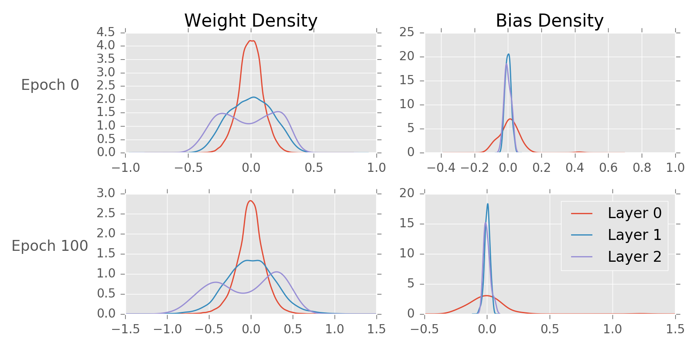
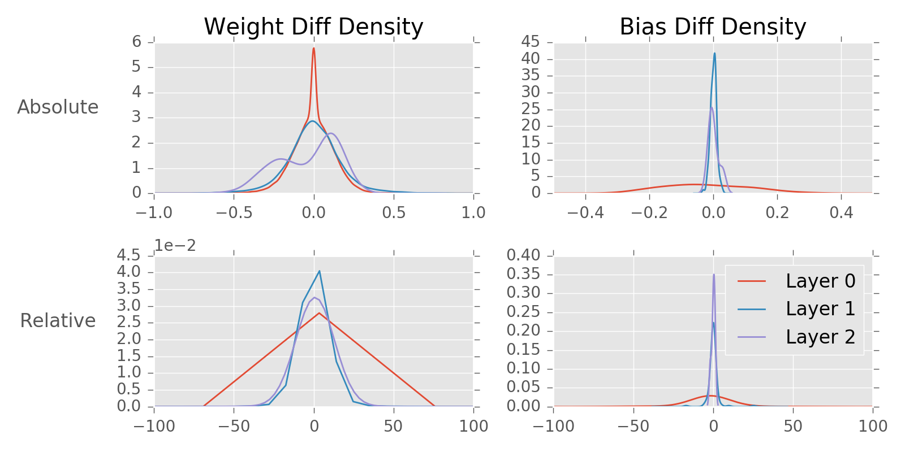
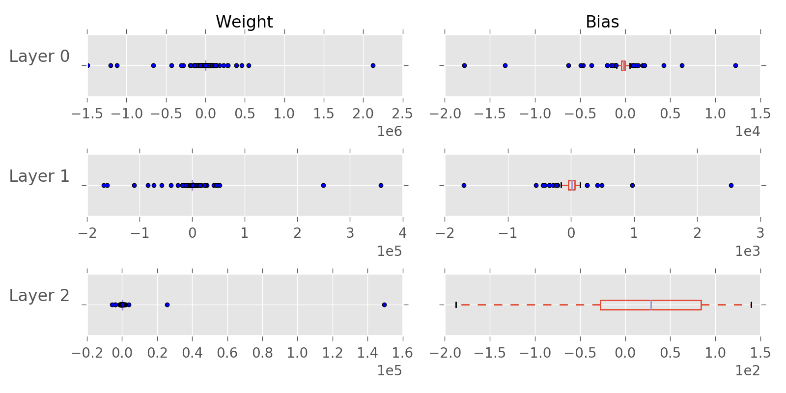
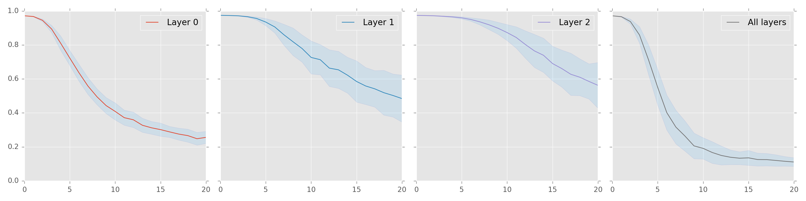
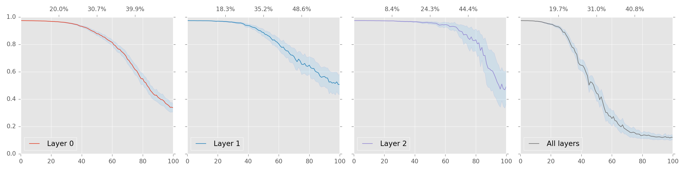
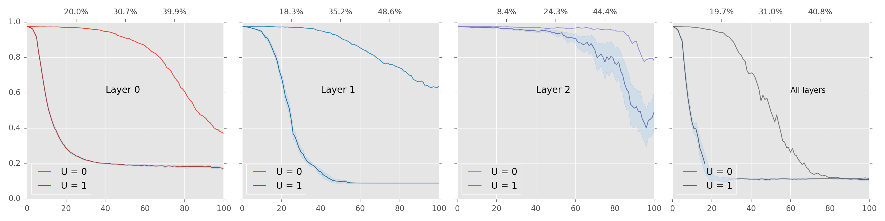
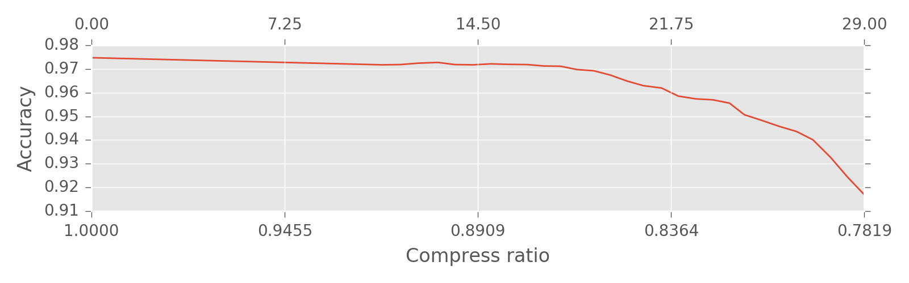

Useless Parameters
In this article, I empirically evaluate the impact of disturbing (i.e., randomly shuffling/re-initializing) the carefully selected parameters in neural network. And surprisingly, I got some intriguing results: a) biases do not matter as long as they remain small; b) useless weights do not matter.
1 Introduction
A neural network usually has a large number of parameters [1].
| Network | Parameters |
|---|---|
| LetNet-300-100 | 1070KB |
| LetNet-5 | 1729KB |
| AlexNet | 240MB |
| VGG-16 | 552MB |
It is really hard to imagine that changing a single weight would have a serious impact on the whole model. The interesting question is how much is too much.
There are many ways to compress a network [2,1]. Some could achieve astonishing compression ratio without losing accuracy. Here we do not use any advanced techniques, simply resetting the raw parameters to see how much impact each parameter may have.
2 Toy Experiment
In this toy experiment, I use a simple 3-layer fully connected feed-forward network.
- Data set: MNIST
- Layer sizes: (28x28, 100, 100, 10)
- Activation: sigmoid for hidden layers and softmax for output.
- Learning algorithm: Adagrad
- Loss function: categorical crossentropy
- Platform: Keras.
- Result: after 100 epochs, test accuracy is around 97%.
2.1 Parameter distribution
Figure 1 shows the parameter distribution of each layer. Left are weight distribution, right bias distribution. Top are distribution before training, bottom after training.

The parameters are centered around zero, as in many other reports.
A few things to note:
- Before training (epoch 0), as layers go deeper, the weights are more dispersed which is as expected since Keras by default uses glorot algorithm to initialize the weight.
- It is interesting that the distribution in output layer1 are bimodal, even before training. Are we going to see multi-modal distribution for deeper layers?
- The weight distribution of each layer does not change much, if any. So what is being learned during training? Does it imply that we could avoid the training at all by a clever initialization?
2.2 How much being learned?
Consider a single weight, before training its value is randomly initialized to \(w\), and after training the value changes to \(w^\prime\). I define the change scale \(c\) as
\[c = \left\vert\frac{w^\prime - w}{w}\right\vert\times 100\%\]
Figure 2 shows the density plot of change scale for each layer. Left is weight matrix, right bias. Top is the absolute change, i.e., \(w^\prime - w\), bottom the change scale.

Figure 3 shows the box plot of change scale.

Those dots in Figure 3 are outliers. i.e., weights that changed dramatically.
From the above two plots of change scale, we could see that a portion of the weights do not change much. There are however some outliers that changed dramatically. So my hypothesis is that the improvement of the whole network accuracy is due to those outliers. To empirically study the hypothesis, we could randomly disturb those useless parameters, i.e., we can randomly shuffle or re-initialize to see the impact on accuracy.
2.3 Disturb biases
The empirical conclusion is that biases does not matter in the final evaluation so long as they remain relatively small, which means they don't learn anything during the training process. We probably need to rethink the role biases play in deep network.
Random shuffling biases does not affect accuracy, if any. For each layer the evaluation is repeated 100 times. The result is show in Table 12.
Table 1: Shuffling Biases Accuracy after shuffling Layer 0 0.9721 (std: 0.0005204) Layer 1 0.9749 (std: 0.0001272) Layer 2 0.9747 (std: 0.0001808) All layer 0.9720 (std: 0.0005995) Original accuracy 0.9748 Randomly resetting the biases does affect accuracy only if biases are too large. Small biases, however, do not make a difference, if any. During the experiment, the biases are randomly reset to the range\((0, U)\). I tested 100 experiments for each \(U\) value. The result is shown in Figure 4. Specifically, resetting all biases to zeros does not affect accuracy at all.

Figure 4: Resetting Biases
2.4 Disturb weights
There are usually a large number of weights needed to be optimized in neural network models. Even in this simple 3-layer toy model, we have 98400 to find-tune. The useless weights being shuffled are selected by their change scale. The intuition is that those weights that do not change much during training are useless since they don't learn anything about the data.
Given a change scale threshold \(T\), the useless weights are those with change scale less than or equal to \(T\), i.e., \(c\leq T\). In the following plots, Y Axis is accuracy, X Axis is change scale.
Random shuffling useless weights does affect the accuracy only if we have too high a threshold. Figure 5 shows the impact of shuffling on accuracy against different threshold values. The top X Axis shows the percent of weights being shuffled.

Figure 5: Shuffling useless weights I'm only interested in resetting weights to zero. As biases, resetting a small portion of the weights has a negligible impact on accuracy. Figure 6 shows the accuracy after resetting useless weights. \(U = 0\) corresponds to resetting weights to zero, \(U = 1\) resetting weights to random values in range \([0, 1)\).

Figure 6: Resetting useless weights
2.5 Final Model
Next we will see how much we could compress the model without a serious side affect on accuracy.
- Reset all biases to zero
- Reset weights in each layer separately with change scale less than 20%.
The result is summarized in Figure 7.

The lower X Axis shows the compress ratio, the upper X Axis shows the change scale criteria.
3 Conclusion
Experiment on this toy example network shows that change scale is a simple yet efficient criteria to prune useless weights. However the compression ratio of just ~0.2 is simply trivial. Other work could achieve 50x compression without losing accuracy. An interesting side note is that biases does not matter much after training.
References
| [1] | Song Han, Huizi Mao, and William J. Dally. Deep compression: Compressing deep neural network with pruning, trained quantization and huffman coding. CoRR, abs/1510.00149, 2015. [ http ] |
| [2] | Forrest N. Iandola, Matthew W. Moskewicz, Khalid Ashraf, Song Han, William J. Dally, and Kurt Keutzer. Squeezenet: Alexnet-level accuracy with 50x fewer parameters and 1mb model size. CoRR, abs/1602.07360, 2016. [ http ] |